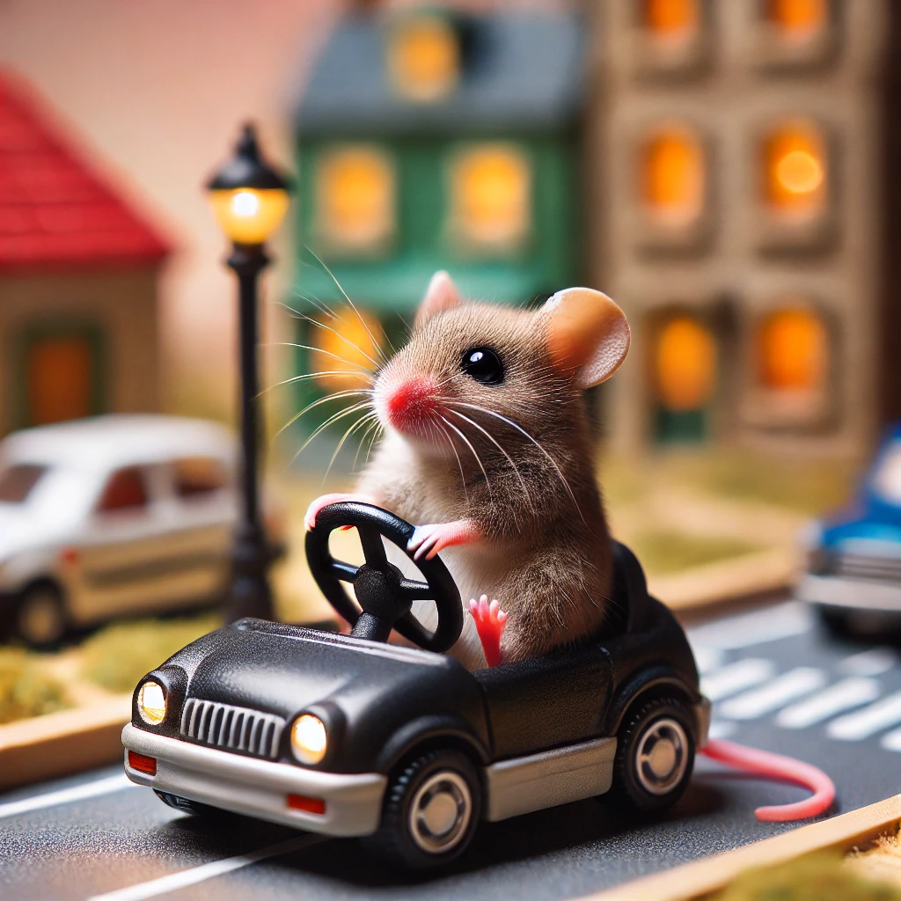
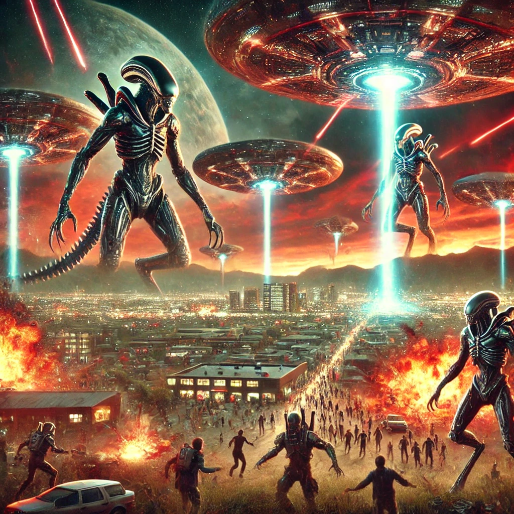
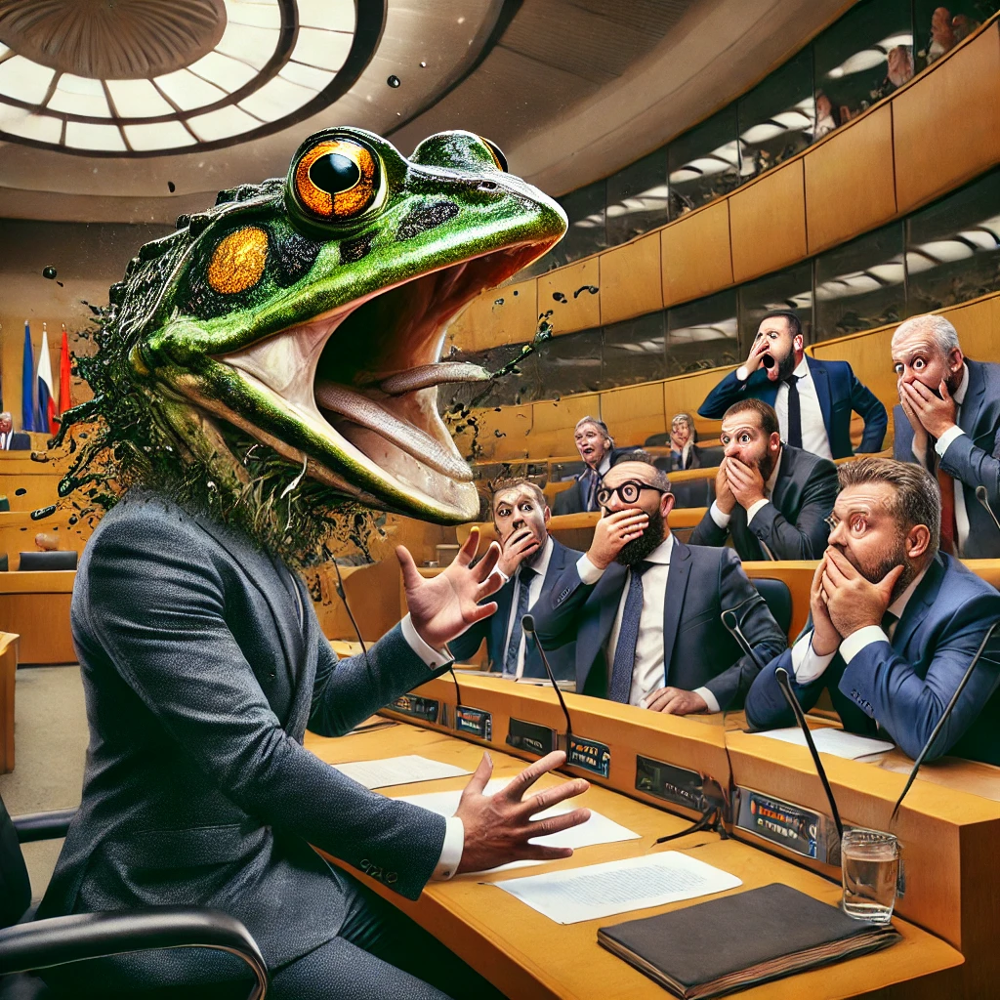
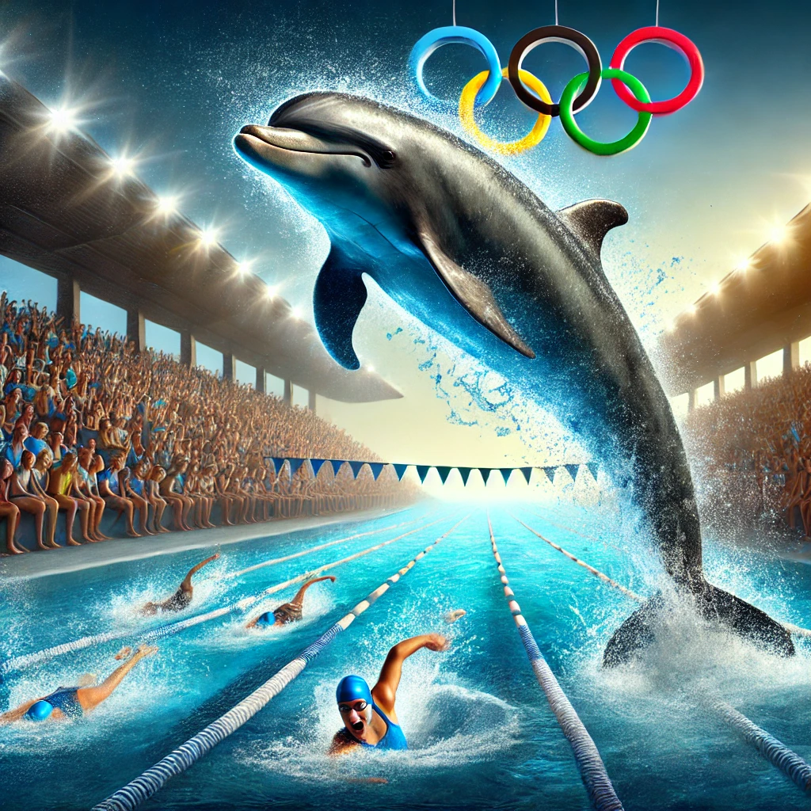

Wetenschappers hebben ontdekt dat muizen in het binnenland auto's kunnen besturen. De overheid vraagt mensen hun auto's 's nachts op slot te doen. "We wisten niet dat dit mogelijk was," aldus een onderzoeker.
Onverklaarbare lichtstralen verschenen boven Utrecht, wat leidde tot verkeersopstoppingen. Experts beweren dat het waarschijnlijk een mislukte laserlichtshow was, maar veel bewoners zijn niet overtuigd.
Duikers beweren een volledig functionerende stad onder de Noordzee te hebben gevonden. De regering heeft een onderzoek ingesteld, maar veel mensen blijven sceptisch over het verhaal.
Wij zoeken goede ontwerpers! Ben jij helemaal thuis in HTML en CSS? Dan zoeken wij jou! Solliciteer nu!

Topoverheden over de hele wereld bereiden zich voor op een aanval van Mars, volgens anonieme bronnen. Het lijkt erop dat diplomatieke inspanningen hebben gefaald, en de eerste raketten worden verwacht tegen het einde van het jaar.
Kangoeroes in Australië hebben een politieke beweging gestart om meer controle te krijgen over nationale parken. Experts zijn verbaasd over de snelheid van de organisatie, en er wordt gespeculeerd dat ze hulp hebben van buitenaf.

Tijdens een fel debat over het klimaatakkoord gebeurde er iets onverwachts: een politicus veranderde in een kikker. Collega's stonden perplex en vroegen zich af of dit een nieuwe tactiek was om de aandacht af te leiden.
In een verrassende zet heeft het parlement besloten om kauwgom kauwen op openbare plaatsen illegaal te maken. Mensen vragen zich af hoe de politie dit gaat handhaven.
Volgens de nieuwe economische hervormingen zal elke 1-euromunt automatisch 2 euro waard worden. Dit plan wordt gepresenteerd als de ultieme oplossing voor de inflatieproblematiek in Europa.
Een nieuwe digitale munt genaamd de 'Cryptopatat' maakt furore op de financiële markten. Volgens insiders is de waarde gebaseerd op aardappeloogsten, en analisten voorspellen een sterke groei.

In een onverwachte wending werd het wereldrecord zwemmen verbroken door een dolfijn die per ongeluk in de wedstrijdbaan belandde. Menselijke zwemmers waren niet amused en eisen nu een hertelling van de tijden.
De internationale voetbalbond heeft een controversiële nieuwe regel aangekondigd: spelers moeten tijdens wedstrijden op hun handen lopen. Coaches en fans zijn in shock, maar de bond blijft bij het besluit.

Na 30 jaar acteren in topfilms ontdekte een populaire Hollywoodster dat hij eigenlijk een robot is. Deze schokkende onthulling heeft de hele filmindustrie op zijn kop gezet.
Een populaire zanger beweert dat zijn nieuwste hit in feite door buitenaardse wezens is geschreven. Hij zegt dat het nummer hem werd 'gechanneld' tijdens een buitenaardse ontmoeting.